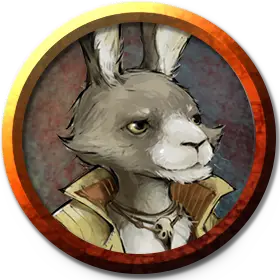

Зайцегон-разбойник
Harengon Brigand
Средний Гуманоид, любое мировоззрение

Класс Доспеха 14 (кожаный доспех)
Хиты 9 (2к8)
Скорость 30 футов
| мод | спас | ||
|---|---|---|---|
| СИЛ | 14 | +2 | +2 |
| ЛОВ | 17 | +3 | +5 |
| ТЕЛ | 11 | +0 | +0 |
| мод | спас | ||
|---|---|---|---|
| ИНТ | 10 | +0 | +0 |
| МДР | 11 | +0 | +0 |
| ХАР | 10 | +0 | +0 |
Навыки Акробатика +5, Восприятие +4
Чувства пассивное Восприятие 14
Языки Общий, Сильван
Опасность 1/8 (25 опыта)
Бонус мастерства +2
Особенности
Тактика стаи. Зайцегон совершает с преимуществом броски атаки по существу, если в пределах 5 футов от существа находится как минимум один дееспособный союзник зайцегона.
Прыжок с места. Зайцегон прыгает в длину на расстояние до 20 футов и в высоту до 10, с разбега или без него.
Действия
Дубинка. . Рукопашная атака оружием: +4 к попаданию, досягаемость 5 фт., одна цель. Попадание: 4 (1к4 + 2) дробящего урона.
Праща. . Дальнобойная атака оружием: +5 к попаданию, дистанция 30/120 фт., одна цель. Попадание: 5 (1к4 + 3) дробящего урона.
Описание
Зайцегоны-разбойники обычно собираются небольшой шайкой и выходят на тропы и дорог, чтобы выслеживать и устраивать засады на своих жертв. Они наслаждаются мольбой путников о безопасном проходе и зло высмеивают их. Эти задиры всегда настроены враждебно к тем, кто потерялся или спешит.
Лучший способ справиться с зайцегонами-разбойниками — собраться численно превышающим их отрядом и надавать им тумаков. Они спасаются бегством, когда преимущество не на их стороне.
Зайцегоны
Зайцегоны — кроликоподобные гуманоиды родом из Страны Фей, которые порой переселяются на Материальный План. Они любят путешествовать пешком и редко остаются в одном месте надолго.
Не все зайцегоны такие подлые задиры, как упомянутые ниже. Каждый зайцегон идёт по своему жизненному пути, а их характер зачастую формируют попутчики. Зайцегоны могут путешествовать в далёкие земли, находить в пути себе друзей, наслаждаться свободой и открытыми путями перед ними в поисках внутреннего покоя. Некоторые могут стать искателями приключений с могучим сердцем и яркими мечтами.